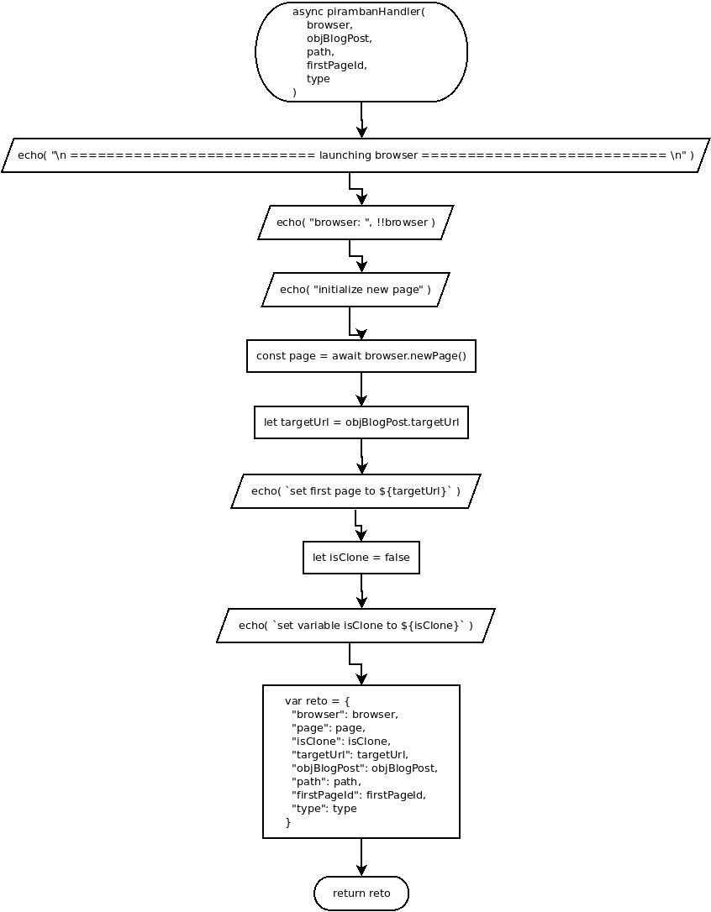

async pirambanHandler( browser, objBlogPost, path, firstPageId, type )
Flowchart

Code
async pirambanHandler( browser, objBlogPost, path, firstPageId, type ){
echo( "\n =========================== launching browser =========================== \n" );
echo( "browser: ", !!browser );
// open new page
echo( "initialize new page" );
const page = await browser.newPage();
let targetUrl = objBlogPost.targetUrl;
echo( `set first page to ${targetUrl}` );
// set defaut if clone
let isClone = false;
echo( `set variable is_clone to ${isClone}` );
var reto = {
"browser": browser,
"page": page,
"isClone": isClone,
"targetUrl": targetUrl,
"blogPost": blogPost,
"path": path,
"firstPageId": firstPageId,
"type": type
};
return reto;
}